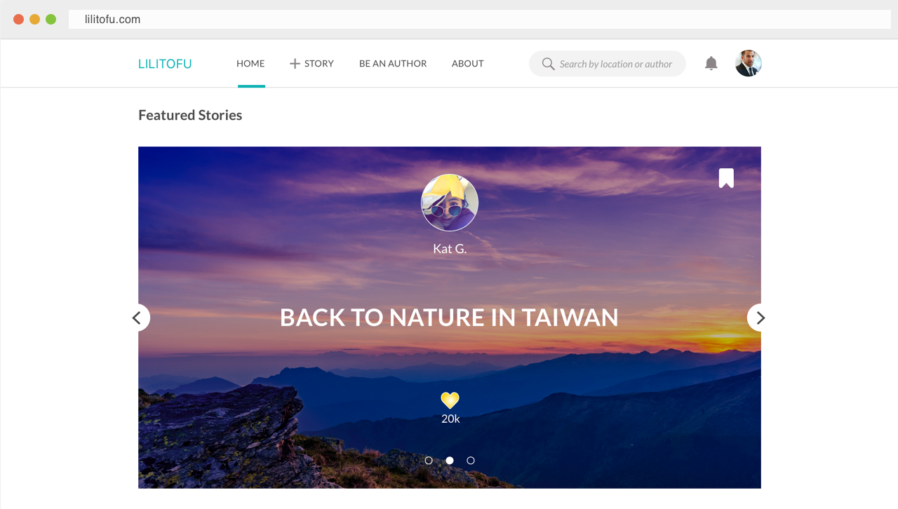

Lilitofu
- 3 min read
my Role
I am the sole designer working on a complete redesign of Lilitofu’s website. I work closely with PM and engineers to ship the site. I also work with the iOS designer to make sure the cross-platform experience was consistent.

Our mission
Lilitofu is a platform for sharing authentic travel experiences. It is for the world explorers who always strive to live life to the fullest.
Our primary goals of a redesign
The general goal was to go from a rough MVP to a polished version 2 that delivers on the brand promise. To be more specific, we wanted the website to be able to:
1) Provide great reading experience for users so that they can be inspired and prepared to travel
2) Encourage travellers to share their experiences to enrich our community
Overall process
While we had a general direction, we were not sure what the exact problem we should target on. Therefore, the first phase of design process consists of exploring and refining the problems and goals. After that, we did several rounds of iteration and user tests before we arrived at the final designs.
The rest of the case study roughly maps out the process and highlights of the project.
Defining the audience
We divided our potential users into two groups:
1) travel authors who love to take photos and share their travel experiences
2) travellers who read travel stories for inspirations and travel preparation
The two groups are not mutually exclusive, but represent two major kinds of user needs that we had to consider when designing for the user experience.
User interviews: what’s useful and important?
Based on our definition of two types of users, we conducted user interviews to understand the needs of the two groups regarding travel stories.
For travel authors
- ease of use when creating and editing a story
- nice display of their stories
- enough exposures on their stories
- interactions with the readers (likes, recommendations, etc.)
For readers
- rich and high-quality contents of travel stories
- high readability of stories
- help on travel planning
Major challenges
1) While we want to encourage more users to share their stories, we also want to prevent low-quality contents from taking over the platform.
2) We want the first-time users to quickly understand that we’re not merely a photo sharing website, instead, we share stories. How do we convey this on a first glance?
Final designs
Homepage experience
Major decisions on homepage:
1) Each sections are put under subtitles to suggest that Lilitofu is a story sharing platform instead of photo sharing. All the stories except the Featured Stories are presented as slides. When hovering on a story cover photo, the cover photo changes to other photos from the story at an interval of one sec.
2) On the first screen of the homepage we give the space to "Featured Stories", which are hand-picked by us and updated regularly. This is the place where stories get highest exposure. Travel authors love this design and so do readers.
3) The second section is “Featured Authors”. Here authors get direct exposures on their personal profiles. These authors are verified by Lilitofu as Travel Authors. A button for application is placed here to encourage people to apply.
4) The third section is “Top Stories”. These are the stories that received the most likes (represented by a heart button). But since it is likely that the top stories will remain unchanged for a while, we don’t want them to take up too much space so that users see the same contents over and over again, we only show 1 - 3 stories depending on screen widths, and hide the rest in a carousel.
5) The fourth section is “Recent Stories”, which is a never-ending list if you keep clicking on the “Load More” button. This section gives every user an opportunity to expose their stories on the homepage.
Story page experience
Major decisions on story page:
1) The index of the story is fixed on the left side. It is a two-level index. The child index of the story is simplified to dots representing each places, so that users know the progress of their reading experience. The child index of map is expanded to include the names of the places when users click into the map section, which is located at the bottom of the page. The reason behind this design is that we want to reduce clutters when the user reads the story, so that (s)he can better focus on the story itself. Also, the names of the places are already listed in the address below the photo. But when the user comes to the map section, (s)he is engaged in a trip planning mode, which makes a full blown version of index valuable. The index is fully interactive with the map.

2) The map is put at the bottom of the page because it is more likely to be useful after a user decided that (s)he likes the story. But if (s)he is curious about the exact location on map, (s)he can click on the address below the photo to jump to the map. By clicking on the thumbnail on the map (s)he can return to where he left the story feeds.
3) The map marks all the places mentioned in the story, and link them by day. Most websites of this type link all the locations with one line, which makes it hard to tell where the route starts and ends.
Profile page experience

On the user's profile page, we provide a world map that automatically show the places a traveller has been to according to his/her stories. In doing so we hope to encourage users to contribute more stories.
What's next?
The next step is to push the design to be implemented as close to the mockups as possible. Right now the engineers are working on the site. Meanwhile, I started designing for the story creation feature and trip planing feature.